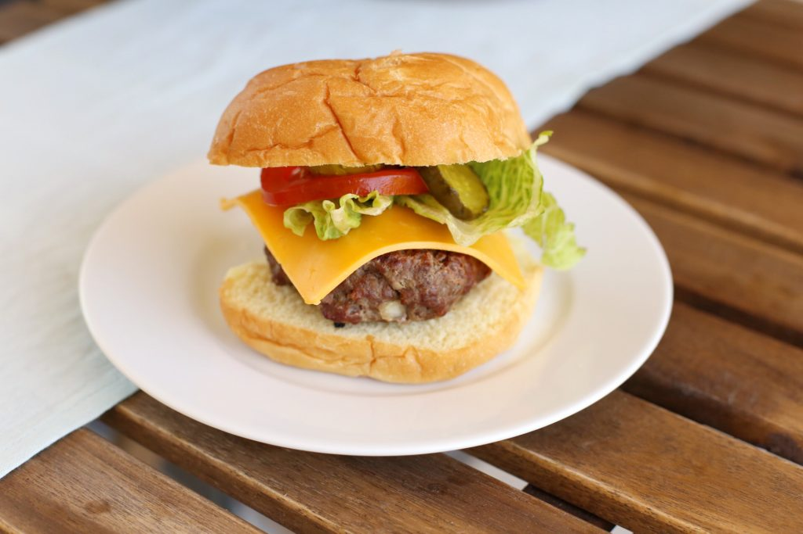

Recipe for hamburger

Summer's coming, and one of my favorite parts of the season is regular evening and weekend grilling. Our family is completely smitten with grilling.
I will share with you our favorite recipe for juicy beef burgers.
Ingredients
Perfect grilled Hamburgers
Makes 6-8 hamburgers
- 2 pounds 85% lean beef
- 1/3 cup finely diced swrrt onion
- 1 teaspoon granulated garlic
- 1 teaspoon worchestire sauce
- 1 teaspoon low sodium soy sauce
- 1 teaspoon A1 steak sauce
- 1-1/4 teaspoon fine sea salt.
Steps
- Combine all of the ingredinets in a stainless steel mixing bowl and knead them together until everything is completely combined.
- Form into 6-8 burgers and place them in a glass baking dish or tray.
- Marinate in the refrigerator for 4-6 hours.
- Prepare and heat your grill and cook trough, making sure not to overcook them.
- Serve on bakery buns with slices of sharp aged cheddar cheese, lettuce, tomato and bread an butter pickles.